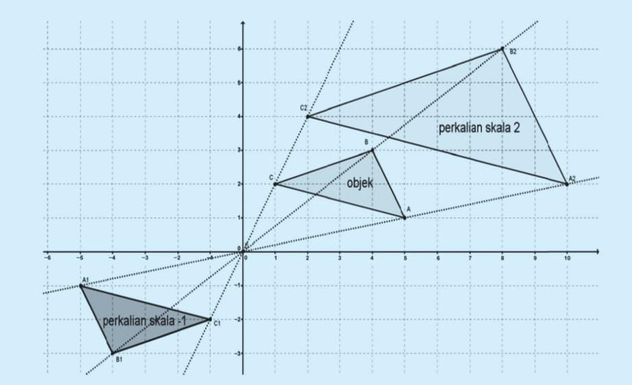
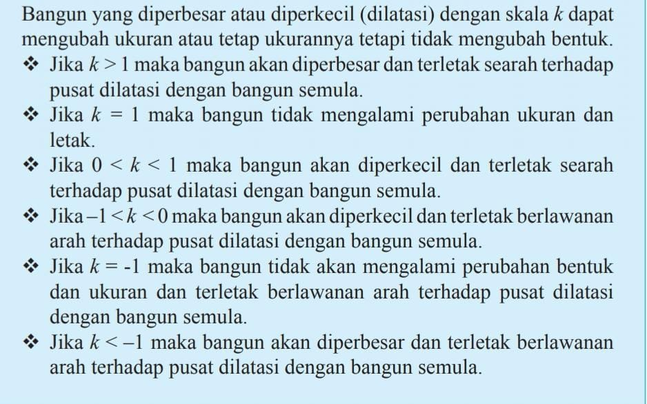
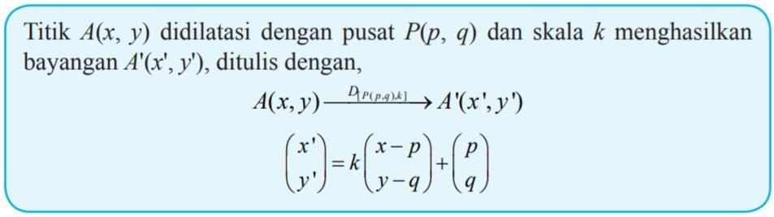

Dilatasi
Konsep Dilatasi
Balon yang ditiup akan mengembang, karet gelang dapat direnggangkan, kalua ada gambar pada layer HP yang tidak terlihat dengan jelas dapat dilakukan perbesaran. Semua contoh tersebut merupakan suatu perbesaran atau pada transformasi geometri ini dikenal dengan perkalian ukuran objek. Bagaimana maksudny? Amati gambar berikut.
Jika diamati, kamu melihat ukuran objek akan semakin besar dengan perkalian skala 2. Kemudian jarak OA2 adalah dua kali OA, jarak OB2 adalah dua kali OB, jarak OC2 adalah dua kali OC. Tetapi bangun setelah perkalian factor skala -1 mempunyai besar dan ukuran yang sama tapi arahnya berlawanan. Perhatikan juga, jarak OA1 sama dengan jarak OA , jarak OB1 sama dengan jarak OB, jarak OC1 sama dengan jarak OC.
Hal ini berarti, untuk melakukan perkalian/dilatasi, dibutuhkan unsur faktor perkalian dan pusat perkalian. Sehingga diperoleh kesimpulan sebagai berikut:
Rumus yang diperlukan untuk menghitung dilatasi dapat dituliskan sebagai berikut
